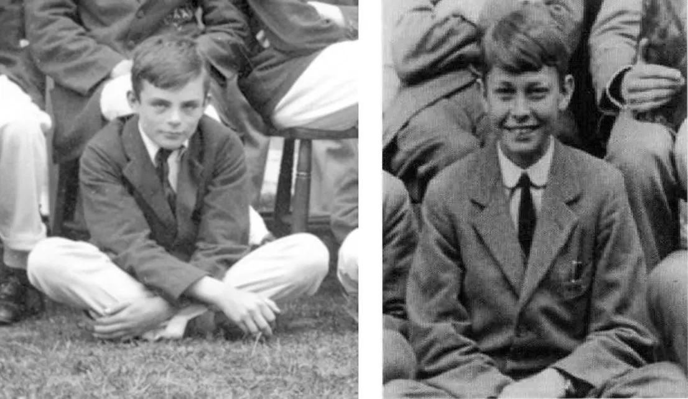
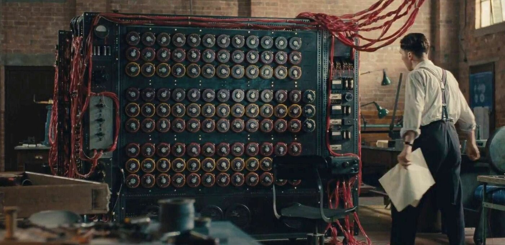

Juventude e Educação (A Mente Prodígio)
Desde cedo, Turing mostrava uma inclinação absurda para as ciências exatas, muitas vezes
ignorando as matérias de humanas para desespero de seus professores na Sherborne School.
-
Sherborne (1926): No seu primeiro dia de aula, houve uma greve geral de trens.
Determinado, Turing pedalou sozinho por cerca de 100 km para não perder o início das aulas. -
Christopher Morcom: Foi na escola que ele conheceu seu primeiro grande amor e parceiro intelectual, Christopher Morcom.
A morte precoce de Morcom por tuberculose em 1930 marcou Turing profundamente e o motivou a entender
como a mente humana poderia sobreviver após a morte física através de máquinas e lógica.

King's College, Cambridge (1931 - 1934)
Turing entrou para o King's College em Cambridge para estudar Matemática. Foi lá que ele se
sentiu verdadeiramente livre para explorar suas ideias.
-
Excelência Acadêmica:Ele se formou com honras de primeira classe e, aos 22 anos, foi
eleito Fellow (membro acadêmico) do colégio devido à qualidade de sua dissertação
sobre o Teorema do Limite Central. -
O Artigo de 1936:Foi em Cambridge que ele escreveu o artigo "On Computable
Numbers". Nesse texto, ele resolveu um problema matemático complexo e, no processo,
inventou o conceito da Máquina Universal. Ele provou que uma máquina poderia realizar
qualquer tarefa lógica se recebesse o algoritmo correto — a base do software moderno.
Princeton e o Pós-Graduação (1936 - 1938)
Turing atravessou o Atlântico para fazer seu doutorado na Universidade de Princeton, nos EUA
-
Sob os Gigantes: Ele trabalhou com Alonzo Church, outro titã da lógica. Naquela época,
Princeton era o epicentro da ciência mundial, abrigando ninguém menos que Albert
Einstein e John von Neumann. -
A Base do Hardware: Em sua tese, ele introduziu o conceito de "lógica ordinal" e
"computação relativa", que expandiram suas ideias sobre máquinas que poderiam
resolver problemas complexos. Von Neumann, inclusive, reconheceu que o conceito de
computador centralizado que usamos hoje veio diretamente das ideias de Turing.
O Código Enigma e a Segunda Guerra
Durante a Segunda Guerra Mundial, Turing trabalhou em Bletchley Park, o centro de
criptografia britânico. Seu maior feito foi liderar a equipe que decifrou a Enigma, a máquina
usada pelos nazistas para enviar mensagens codificadas.
-
Impacto:Historiadores estimam que o trabalho de Turing encurtou a guerra em pelo
menos dois anos e salvou mais de 14 milhões de vidas. -
A Bombe: Ele projetou uma máquina eletromecânica (chamada Bombe) que conseguia
descobrir as configurações da Enigma muito mais rápido que qualquer humano.

O Retorno à Inglaterra e o Pós-Guerra
Após recusar uma oferta para ficar nos EUA, Turing voltou para Cambridge em 1938, mas logo
foi recrutado pelo governo para o esforço de guerra em Bletchley Park (como vimos antes).
Após a Guerra (1945 - 1952):
-
NPL e Manchester:Ele trabalhou no Laboratório Nacional de Física (NPL), onde projetou
o ACE (Automatic Computing Engine), um dos primeiros designs de um computador com
programa armazenado. -
Biologia Matemática:Nos seus últimos anos, ele se mudou para a Universidade de
Manchester e começou a estudar Morfogênese — como padrões (como as listras de uma
zebra ou as manchas de um leopardo) se formam na natureza através de reações
químicas. Esse trabalho ainda é fundamental na biologia teórica atual.
| Período | Fase da Vida | Descrição Pricipal |
|---|---|---|
| 1912 | Nascimento | Nasce em Londres, em 23 de junho |
| 1926 - 1931 | Juventude e Sherborne | Destaca-se em ciências e conhece Christopher Morcom, sua primeira grande influência intelectual. |
| 1931 - 1934 | Graduação em Cambridge | Estuda Matemática no King's College e torna-se mestre aos 22 anos. |
| 1936 - 1938 | Doutorado em Princeton | Desenvolve o conceito da "Máquina de Turing" e colabora com Alonzo Church nos EUA. |
| 1939 - 1945 | Bletchley Park (II Guerra) | Lidera a quebra do código Enigma nazista e projeta a máquina "Bombe". |
| 1945 - 1948 | O Projeto ACE (NPL) | Projeta o Automatic Computing Engine, um dos primeiros esboços de computador moderno. |
| 1948 - 1954 | Manchester e IA | Assume cargo na Universidade de Manchester e cria o famoso "Teste de Turing". |
| 1952 | Condenação e Castração | É processado por homossexualidade e forçado a aceitar tratamento hormonal. |
| 1954 | Morte Prematura | Falece aos 41 anos por envenenamento por cianeto. |
| 2013 | Perdão Real Póstumo | A Rainha Elizabeth II concede perdão oficial, reconhecendo a injustiça histórica. |
A vida de Turing foi uma busca constante por entender a "inteligência", fosse ela biológica ou
mecânica. É fascinante notar que ele estava décadas à frente de seus contemporâneos em
quase todos os campos que tocou.